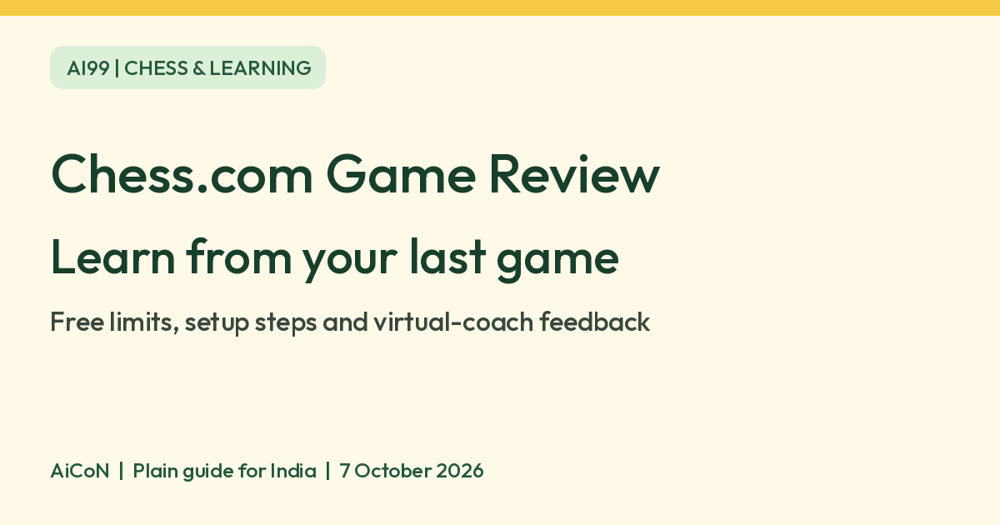

Chess.com Game Review: learn from your finished games
Instead of starting another chess game straight away, review the one you just finished. Chess.com Game Review uses a chess engine and virtual coach to highlight key moments. Free access exists, but unlimited reviews and some advanced features require a paid membership.

What does Game Review do?
Game Review analyses the moves in a finished chess game. It shows which side had the advantage, labels moves such as mistakes or blunders and offers a guided breakdown of important positions. The virtual coach is software, not a human chess teacher.
Chess.com describes Game Review as engine-powered. Its March 2026 beta announcement introduced Torch Human, a version of its Torch engine aimed at choosing strong moves that look more like human play. A separate official Torch announcement describes neural-network versions. This is computer-chess analysis rather than a general-purpose chatbot. We have not verified which engine version every account receives.
Why it can be useful in Kerala and India
If you play casually with friends or practise for a school chess club, the useful part is seeing where a completed game changed. A suggested routine is to inspect one mistake, understand the alternative and practise that idea before your next game. This is an editorial suggestion, not a promise of rating improvement or tournament success.
We confirmed a live India App Store listing for Chess.com - Play and Learn, free with in-app purchases. Official help covers both web and mobile Game Review. We did not test Android installation in India or Malayalam coach explanations.
How to review on the web
- Sign in to your own Chess.com account and finish a game.
- Select the green Game Review button on the game-over screen. It is also shown beside the game.
- Look at the game graph and move classifications to find a position worth studying.
- Use Next to move through the key moments, or the navigation arrows to inspect moves one at a time.
- Where your account provides coach feedback, open the suggested move or continuation to see why the position changed. Button labels can vary by version.
- Use Self Analysis if you want to explore different moves yourself with engine evaluations and suggested lines.
- Write down one idea to practise. Do not confuse one game's Accuracy score with your chess rating.
How to review on the phone
- Open the official Chess.com app and finish a game.
- Choose Game Review from the end-of-game pop-up.
- Use the arrows or swipe the move list to browse positions. Next jumps to key moves.
- Use the gear icon to adjust the available review settings. Access to deeper analysis can depend on your membership.
Free access, paid features and limits
| Free verdict | Chess.com's official Game Review explainer says non-premium members get one free Game Review each day. Its current help page confirms free insights such as Accuracy, move classifications and Self Analysis. |
|---|---|
| Not unlimited | Unlimited Game Review and some advanced analysis features require Premium. Do not assume a free review unlocks every coach feature. |
| Paid details | Diamond includes Cloud Analysis and deeper engine-analysis options according to the help centre. We did not verify a final India subscription price; check the amount and billing period in your account before paying. |
| Existing reviews | The help centre says reopening an already-generated review does not use the daily free review limit. |
| India availability | The app is listed in India's App Store. Listing verified, not hands-on installation. Android India installation was not tested. |
Limits to keep in mind
Only review after the game is finished. Do not use engine suggestions to choose moves in a live game against another person.
Accuracy measures how closely your moves match the engine's preferred moves. Chess.com's help page says it is not your rating. The quick summary immediately after a game can classify a move differently from the later, more detailed Game Review.
Official pages show different button sets: current help discusses Retry, while a March 2026 beta announcement replaces it with Explain. This guide does not promise either button on every account. Follow the controls visible in your version.
Checked official Game Review help, app instructions, Game Review explainer, engine announcements and India's App Store on 7 October 2026. Confirmed free access with limits, finished-game review, key moments and app listing. Not tested: engine accuracy, coaching quality, rating improvement, Malayalam feedback, Android India installation or account-specific premium pricing.
Frequently asked questions
Is Game Review completely free?
No. Chess.com describes a daily free review and free key insights. Unlimited reviews and some advanced options need Premium.
Can I reopen yesterday's review?
Yes. The help centre says reopening a generated review does not count against the daily free limit.
Is the coach a person?
No. Game Review uses computer analysis and a virtual coach. It does not book a human lesson.
Does a high Accuracy score mean a high rating?
No. It reflects the moves in that game relative to engine preferences, not your overall rating.
Why do I see different buttons?
The app, web and beta versions can differ. Use the available feedback controls rather than expecting one exact layout.
Sources: Game Review help, App instructions, Game Review explainer, Torch Human beta announcement, Torch neural-network analysis announcement, Beta button changes, India App Store. Checked 7 October 2026.